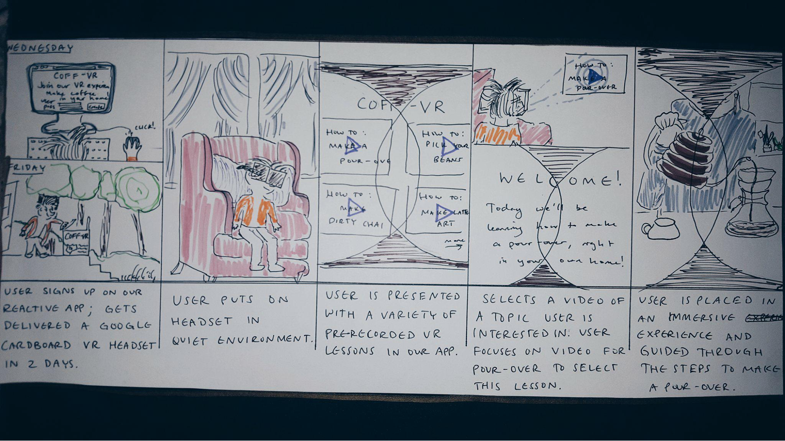
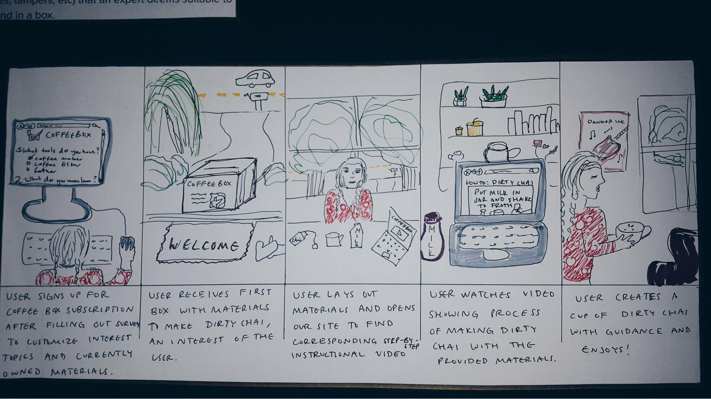
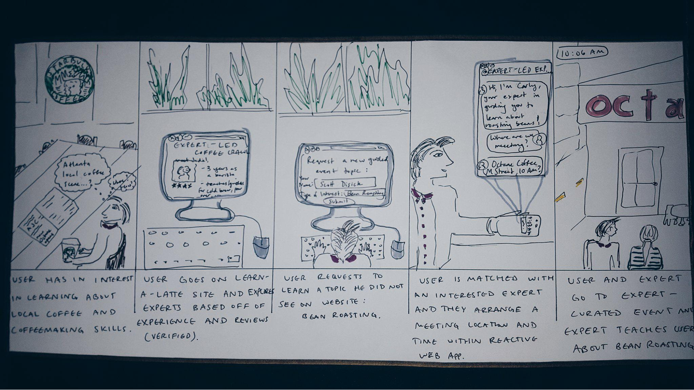

"Sharing economy" was the theme of my user interface development course. For our semester-long project, the class was to split up into groups and create a system that facilitated contact between providers and consumers. My professor wanted to keep the problem space broad so they defined a provider as anyone or anything that provided a good or service, and a consumer as anyone or anything that consumed said good or service. After much deliberation, my group decided that our providers would be coffee enthusiasts and our consumers would be people who are coffee-curious. If you like, you can view the detailed notes of the project here. Fair warning, though, there are four sections to the project, each with similar information due to the iterative nature of the project. I found it important to include all of the sections, however, because they show the whole lifespan of the project from its conception to fruition.
And now for the CliffNotes version of it.
My group originally had a different idea for the project. Instead of focusing on coffee, we had planned to create a service where experts on a particular subject could link up with novices of the subject so that the novice could learn from the expert. We conducted our user research, created an affinity diagram, made a competitive analysis, and produced user personas with this concept in mind.

However, after being reviewed by our peers and instructors, it came to our attention that our idea was too broad and that we needed to narrow down our scope. We still wanted to create an educational platform, though, so that our data could still be put to good use. It was then that we conjured up our coffee-centric interface.
When developing our concept, we created three design criteria to keep our ideas cohesive. The first criteria was convenience. We wanted the interface to be accessible to users across a variety of platforms. The second was credibility. The coffee expert should be reviewed for legitimacy and professionalism. And the third was customization. The coffee novice should feel as if they had a personalized learning experience that was tailored to their interests.
After we cemented our design criteria, we created prototypes of possible solutions for our problem space: CoffVR, Coffee Subscription Box, and Expert-Led. CoffVR is essentially a video library of tutorials that novices can experience in VR. The idea behind this solution was to provide the novice with a way to watch an expert teach in real-time.
The Coffee Subscription Box, as its name implies, is a subscription box that is sent to the novice which contains an assortment of items that the novice can use to learn a coffee-related skill. After receiving the box, the novice can go to the service’s website and watch a companion tutorial video made by an expert. The idea is that they can follow along the expert with all of the materials available for them to use.
Expert-Led is simply a method for experts and novices to physically meet. In this solution, we envisioned that the two would meet in a public place and that the expert would have an itinerary planned for the novice. Think coffee house tours across a big city.
After presenting our solutions, we figured that our prototypes weren’t the best solution to our problem. CoffVR was just a video library but in VR. Anyone could go on YouTube and search how to cold brew. The Coffee Box Subscription could be really expensive and the materials inside of them could be a liability. Expert-Led was just a little too mundane.
With these reflections in mind, we combined the best parts of each of our prototypes to create our final prototype.
This solution involves the novice registering for an account with our service. After they do, they are able to input their coffee interests. After the system analyzes their interests, an expert hand-tailors a box containing all of the materials that they will need to learn about their interest. For example, if a novice was interested in roasting coffee beans, the expert would send them a bag of coffee beans, creamer, and sugar. After the novice receives the box in the mail, they are able to scan the labels that are on each item in the box. Scanning the items links their device to a video tutorial of an expert using the item that they scanned to perform the task that they’re interested in. Additionally, the entire video library is open for all members to view regardless if they have scanned a label or not so that they can look into other topics if they’re curious. Potential expert users can also use the system by applying to be an expert. Each expert application will be reviewed for credibility.
At the last phase of the class, each team was required to reflect on their final prototype and its wireframe and complete a heuristic evaluation. Here’s a link to my evaluation. I would include a link to the wireframe itself, but I believe that my team’s Balsamiq trial is over and that our wireframe is now lost forever. There are screenshots of the wireframe in the detailed documentation, though!